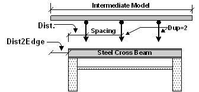

Use this entry table to define the locations where the intermediate transverse model has supports that will be the load locations on the cross beam
For a continuously supported condition, use a spacing of 1 foot with a duplicate value sufficient to place supports across the beam.
Use more then one entry for spacing that is not consistant.

Parameters
Dist (feet)
Enter distance from the left edge of the cross beam to the support location. The 2DT parameter “Dist2Edge” will be used to position this support on the intermediate model.
Space (feet)
Enter distance between duplicates.
Duplicate
Enter number of times to duplicate the support / loading location.